contaminacion
Aplicacion tres

La Contaminación se denomina a la presencia en el ambiente de cualquier agente químico, físico o biológico nocivos para la salud o el bienestar de la población, de la vida animal o vegetal. Esta degradación del medio ambiente por un contaminante externo puede provocar daños en la vida cotidiana del ser humano y alterar las condiciones de supervivencia de la flora y la fauna. Alrededor de 2 millones de personas podrían morir cada año por alguna causa atribuible a la contaminación atmosférica, asegura la Organización Mundial de la Salud. Según este estudio la mayor cantidad de muertes se producen en los países en desarrollo donde se concentran altas densidades de partículas nocivas para la salud. La población humana crece según una progresión geométrica y la demanda de alimentos y necesidades básicas para la vida del hombre son cada vez mayores. El aumento en el consumo de diversos productos y desechos, provocados por el ser humano, trae como consecuencia la generación de sustancias tóxicas. Este desarrollo indiscriminado ha alterado la Tierra:
1.- El tráfico rodado: los coches y camiones son los mayores contaminantes urbanos porque a diario circulan arrojando al aire gases tóxicos perjudiciales para la salud. Estos vehículos contaminan a causa de la combustión de los hidrocarburos que utilizan para moverse, y el desgaste de los frenos y ruedas.
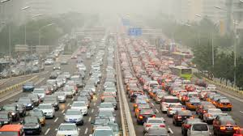
2.-En las ciudades existe otra fuente de contaminación como son las construcciones y las demoliciones: estas actividades desprenden polvos y gases que dañan el aire de la zona en que se desarrollan, y a su vez contaminan el agua donde arrojan sus desechos.
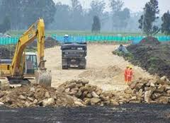
3.- Los Combustibles fósiles: el confort y el bienestar de los habitantes de las grandes ciudades trajo como consecuencia el aumento en el consumo de combustibles fósiles. La producción de carbón, de petróleo y de gas natural crece de la mano del ascenso de los niveles de contaminación del aire, del suelo y del agua del planeta.
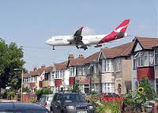
4.- El índice de población mundial ha crecido a distinto ritmo que la tasa de mortalidad, hecho que ha impactado sobre el medioambiente: provocando la ineficiencia en el tratamiento de las aguas residuales domésticas, el aumento del consumo irreflexivo y la generación de toneladas de basura.
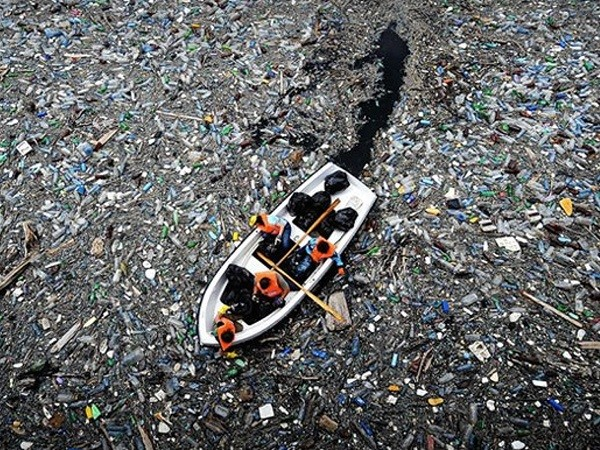
5.- El progreso tecnológico beneficia a nivel económico y social, pero la proliferación de industrias y la falta de control ambiental en sus procesos, ha perjudicado el ecosistema por la gran cantidad de residuos arrojados al aire, en ríos y mares.
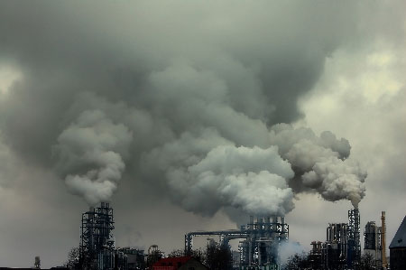
5.- La deforestación: la tala indiscriminada en bosques y selvas impide que los árboles, encargados de purificar el aire, realicen esta tarea y que miles de animales y plantas se extingan por no tener un lugar donde vivir y crecer.
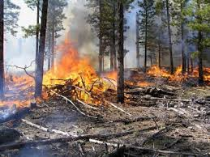
6.- Los pesticidas y los productos químicos utilizados en los cultivos llegan a contaminar el suelo y el agua de la zona en que se sembró. Llegando incluso a contaminar, de forma alarmante, a muchos alimentos.
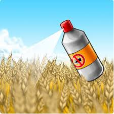
Problemas para la salud: la contaminación hace que las personas estemos cada vez más expuestas a padecer problemas cardiovasculares, con el grave peligro que esto entraña para nuestra salud y vida.
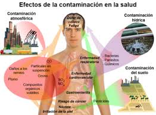
Debilitamiento de la capa de ozono: la capa de ozono es la que nos protege de los rayos del Sol, los cuales pueden llegar a ser mortíferos sin esta capa. la consecuencia de este debilitamiento es que cada vez nos protege menos y, por ende, cada vez tenemos una mayor temperatura en el planeta. Esto no solo hace que cada vez haya más zonas desiertas en las que es imposible vivir, sino que también hace que el hielo en los polos se deshaga y mueran muchas especies por ello. No hace falta mencionar que esto hace subir indudablemente el nivel del mar y que, de seguir así, muchas ciudades costeras se verán arrasadas, quedándose sin playas y sin zona costera.
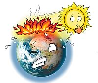
La contaminación afecta al suelo y al agua: la contaminación al medio ambiente afecta al agua y al suelo, lo que hace que cada vez haya más especies en peligro de extinción. El agua no es potable en una gran cantidad de sitios y el suelo para la siembre no tiene los nutrientes necesarios, lo que hace que cada vez se pueda cultivar menos y que el número de cosechas para nuestro sustento sea cada vez menor.
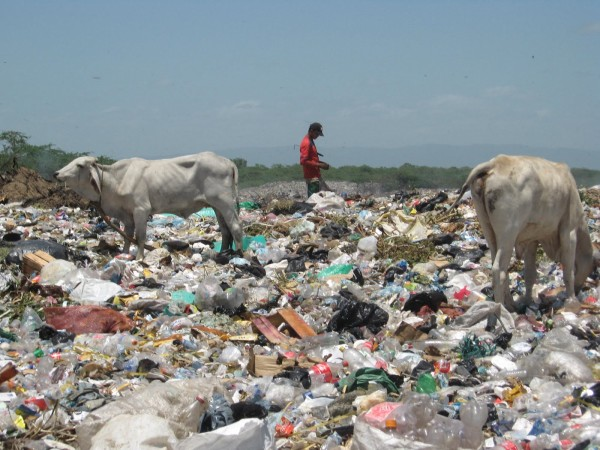
La contaminación afecta al clima: seguro que ya te has dado cuenta que los inviernos pueden ser mucho más fríos o que los veranos son mucho más calurosos, a la vez que seguro te has dado cuenta que las estaciones como el invierno y el verano pueden ser más largas y que las de temperaturas medias, son cada vez más cortas. Todos estos cambios y los fenómenos que no se habían visto desde hace mucho tiempo o incluso nunca se habían visto son causados por la contaminación.
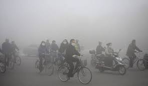
Como su nombre lo sugiere, “Contaminación del agua” es el tipo de contaminación que supone la contaminación distintos cuerpos de agua. Varias criaturas acuáticas dependen de estos cuerpos de agua y sus características naturales nutritivos para apoyar su vida. Contaminación del Agua
Los residuos industriales se vierten en estos cuerpos de agua. Esto provoca un desequilibrio químico en el agua que conduce a la muerte de los seres acuáticos. Insecticidas, pesticidas y productos químicos de maduración que se utilizan en las plantas que se usan en el sistema de aguas subterráneas o arroyos cercanos. Lavar la ropa cerca de lagos y ríos detergentes causa una enfermedad llamada “eutrofización”, que bloquea la luz del sol entre en el interior y reduce los valores de oxígeno en el agua, causando un ambiente inhabitable. Derrames de petróleo’ son causados cuando los buques petroleros gigantes y plataformas petrolíferas que están presentes en los océanos están dañadas por cualquiera tipo de error humano o natural causando un daño a largo tiempo para el océano. Como el petróleo es más ligero que el agua, flota sobre el agua formando una capa de bloqueo del luz del sol. Ciertos desastres naturales como las inundaciones repentinas y los huracanes causan la entremezcla de agua con sustancias nocivas en la tierra.
Definición Contaminación Acustica Molesto / desagradable Fuerte Distracción / Intrusa El ruido es en realidad una palabra latina que le da el significado? Mareo?. Más comúnmente, se puede afirmar que la sensación de molestia, desagrado o molestia. No es muy fácil de definir la definición de la contaminación acústica. Esencialmente.
En nuestro día a día la vida de la contaminación acústica está aumentando rápidamente y se vuelve a creeer como una de las amenazas graves en algunas zonas. La contaminación acústica se convierte en una tensión total a tantos animales que también crean muchos problemas en la relación presa / depredador y detección. También conduce a varios problemas de reproducción diferentes. Ruidos muy graves puede deducir En problemas para los hábitats de uso de algunas criaturas sensibles del sonido, y finalmente el resultado es el agotamiento de especies raras. Específicamente aquellos cuyas sentido del oído es muy agudo, como las ballenas y los delfines. Todos los científicos están de acuerdo el hecho de que los delfines y las ballenas están cometiendo suicidios masivos sólo cuando llegan a la orilla del mar, observando las señales equivocadas. Efectos de la contaminación acústica están dando a los impactos negativos de tantos en la salud humana. La exposición al ruido conducirá a la agresión, pérdida auditiva, estrés, trastornos del sueño y muchos problemas más psicológicos. Los investigadores han demostrado que muchas personas que pueden permitirse un nuevo hogar han comenzado a comprar casas en áreas donde el disturbio de ruido es muy bajo.
La luz artificial se está convirtiendo en un peligro para nuestra planeta. Esta no sólo afecta a la belleza natural, sino a seres humanos, los animales, las aves y la vegetación. Por lo tanto, el ciclo de vida de los seres vivos también está siendo afectada por la contaminación lumínica.
De acuerdo con el Servicio de Parques Nacionales, a la luz de los Estados Unidos por encima de lo que se requiere es llamada contaminación lumínica. La Asociación Internacional Cielo Oscuro define la contaminación lumínica a los efectos nocivos de la luz artificial en la atmósfera de la Tierra y el medio ambiente.
Es un hecho bien conocido que la quema de combustibles fósiles en centrales eléctricas, hornos industriales y motores de vehículos causa la contaminación del aire. Sin embargo, un menor impacto conocido asociado con estos procesos de generación de energía es la contaminación térmica.
De vehículos de motor a la mayoría de la electricidad producida en las centrales eléctricas, la forma primaria de energía involucrada es el calor. El dispositivo que convierte el calor en otras formas útiles de energía se llama un motor térmico. Un ejemplo común de un motor de calor es un motor de coche en el que se libera la energía térmica de la combustión de aceite de convertir en energía mecánica o movimiento. Como cualquier proceso del mundo real, la combustión de los combustibles y posterior conversión del calor en otras formas de energía son imperfectos. La ineficiencia inherente a los procesos de conversión de energía resulta en pérdidas de calor hacia el medio ambiente. La adición de calor al medio ambiente constituye una amenaza grave para las personas, los animales y las plantas.
Los desechos radiactivos son residuos que contienen material radiactivo. Los desechos radiactivos son generalmente subproductos de la generación de energía nuclear y otras aplicaciones de la fisión nuclear o tecnología nuclear, como la investigación y la medicina. Los residuos radiactivos son peligrosos para la salud humana y el medio ambiente, y está regulado por las agencias gubernamentales con el fin de proteger la salud humana y el medio ambiente.
Las siguientes son las principales fuentes de donde la mayoría de los residuos radiactivos se generan y es responsable de causar la contaminación radiactiva: La producción de combustible nuclear Reactores nucleares de potencia El uso de radionucleidos en las industrias para diversas aplicaciones Los ensayos nucleares llevados a cabo por personal de la defensa La eliminación de los residuos nucleares MINERÍA DEL URANIO
La contaminación del suelo se refiere a la contaminación del suelo por medio de exceso de fertilizantes, productos químicos, insecticidas, herbicidas, pesticidas, etc provocan contaminación del suelo en la disminución de la calidad del suelo y es causada por la erosión del suelo, el exceso o déficit de humedad, disminución de la nutrientes para las plantas o microorganismos del suelo, y la fluctuación de la temperatura alta. La contaminación del suelo, en cierto modo, también conduce a la contaminación del aire y la contaminación del agua. La contaminación del suelo conduce naturalmente a la contaminación del aire por la liberación de estos compuestos en la atmósfera y que puedan explotar. La contaminación del suelo también contribuye a la contaminación del agua si las sustancias venenosas filtran a las aguas subterráneas, o si llega a desbordarse contaminado ríos, lagos u océanos.
Hay varias causas que conducen a la contaminación del suelo. Las principales fuentes de contaminación del suelo incluyen – la deforestación, los incendios forestales, la erosión del suelo, la erupción volcánica, el uso excesivo de fertilizantes químicos, pesticidas, herbicidas, etc, y el vertido de residuos industriales y urbanos.
El monóxido de carbono y óxido de azufre se consideran contaminantes primarios. Estos contaminantes sufren cambios químicos y causan efectos secundarios tales como smog. La contaminación del aire se define por la existencia y la integración de los compuestos tóxicos en el ambiente en concentraciones lo suficientemente altas como para causar daño a los seres humanos, los animales y el medio ambiente de la Tierra.
La quema de combustibles fósiles emite monóxido de carbono y óxido de azufre. Automóviles, autobuses, aviones y cualquier forma de gas como combustible de transporte emiten gases de monóxido de carbono a través de sistemas de escape. El dióxido de azufre se crea a través de la combustión de carbón, y está asociado con los residuos industriales. Los procesos de fabricación utilizan carbón como combustible, liberando dióxido de azufre en el aire a través de los sistemas de escape de fábrica.
Este lugar aun siendo llamado como el lugar con “el mejor clima del mundo” y con la gran actividad de agriculturaque se da ahí es un lugar muy contaminado para solo tener una población de 130 mil habitantes, ya que tiene una contaminación equivalente a la de una ciudad con 300 milhabitantes lo cual es preocupante. Las aguas que utilizan están contaminadas y su calidad es pésima, también llamadas como “aguas residuales” las cuales se usan desde1886 con las que riegan la cosecha lo cual nos afecta a los humanos en gran manera y a la comunidad en general, plantas, animales, etc. Causando cada vez másenfermedades éste tipo de método de riego no cambia y nadie hace nada por tratar de arreglarlo.
el primer cuadro del municipio de Atlixco manifiesta una contaminación similar a la de la ciudad de Puebla, con un índice de contaminación del 23 por ciento permanente, lo cual corresponde a estándares de una población de más de 300 mil habitantes, cuando la ciudad atlixquense cuenta con alrededor de 120 mil habitantes.
El presidente del Consejo Municipal de Medio Ambiente, Jorge Osuna, dio a conocer que las cifras anteriores corresponden a un monitoreo realizado por una estación ambiental en el Centro Histórico de Atlixco.
Comentó que es preocupante la aparición de partículas negativas que flotan en el aire del primer cuadro de la ciudad y que la cifra sea elevada en forma continua.
Osuna detalló que los principales factores que contribuyen a la alta contaminación en el centro urbano se deben a los automóviles y el transporte público en general.
El aire contaminado contiene gases, polvos, olores y humos en grandes cantidades que dañan la salud de las personas, animales y plantas. Además, la contaminación ambiental puede deteriorar la infraestructura urbana, incluso pueden existir componentes que al unirse con otros pueden alcanzar un mayor grado de toxicidad y generar graves problemas de salud.
Si cambias una bombilla normal por una compacta fluorescente ahorrarás 400 kilos de dióxido de carbono al año.
Camina, muévete en bici, comparte el auto, o utiliza el transporte público más a menudo. Ahorrarás 1.5 Kg de dióxido de carbono por cada 5 kilómetros que hagas sin conducir.
Puedes ahorrar 1.000 kilos de dióxido de carbono al año con solo reciclar la mitad de tu basura.
Puedes ahorrar 545 kilos de dióxido de carbono si reduces tu basura en un 10%.
Un sólo árbol absorve una tonelada de dióxido de carbono a lo largo de su vida.
Sólo con apagar la TV, el DVD, el Equipo de Música y el PC cuando no los estés utilizando, ahorrarás miles de kilos de dióxido de carbono al año.
Difunde el mensaje. Dile a tus amigos que vean este trailer de "Una verdad incómoda"